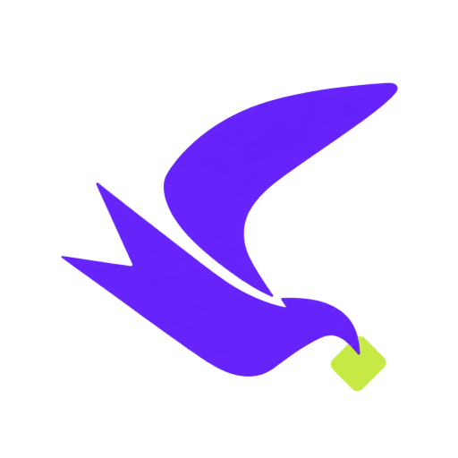

جودة مناسبة
شاهد الجودات المتاحة فعليًا للفيديو واختر ما يناسب الشاشة والمساحة لديك.

CatchIt تنزيل Linuxاختر الجودة، لغة الصوت والترجمة، أو احفظ الصوت فقط. CatchIt يجهز الملف النهائي على جهازك بخطوات واضحة وبسيطة.
نبحث عن أحدث إصدار إنتاج…
من الرابط إلى الملف النهائي، كل خطوة واضحة وقابلة للتعديل قبل البدء.
شاهد الجودات المتاحة فعليًا للفيديو واختر ما يناسب الشاشة والمساحة لديك.
اختر المسار الصوتي المفضل عند توفر أكثر من لغة، مثل العربية أو الإنجليزية.
احفظ الترجمة المتاحة كملف منفصل بجانب الفيديو، عند رغبتك.
حمّل الصوت بصيغة MP3 أو M4A أو FLAC من نفس شاشة الاختيارات.
بدون إنشاء حساب أو كلمة مرور. نزّل فيديو واحدًا مجانًا، ثم فعّل Pro برمز مخصص لجهازك عندما تحتاج المزايا الإضافية.
تنزيل فردي مع اختيار الجودة والصوت والترجمة.
بدون حسابوضع التنزيل المتعدد وبدء التنزيلات تلقائيًا بعد جلب المعلومات.
تفعيل لمدة سنة برمزنسخة Linux x86_64 تحتوي أدوات التنزيل والدمج اللازمة للاستخدام المعتاد. احتفظ بمجلد التطبيق كاملًا بعد فك الضغط.
universal-downloader.universal_downloader من داخل المجلد.يتطلب بيئة Linux x86_64 بواجهة GTK 3. تم اختبار التطبيق على Ubuntu 24.04.